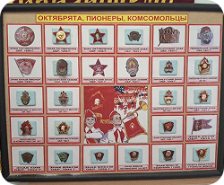
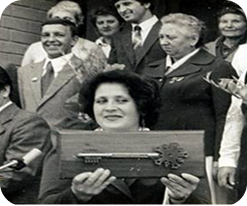

Летопись нашего лицея начинается с 1895 года, в Добруни была открыта первая одноклассная церковно-приходская школа.
19 мая 1922 года была основана Всесоюзная пионерская организация в том числе и в нашем лицее
Пионерские барабаны, брашюры и палочки. Счёты, чернильница,перьевая ручка
Значки октябрят, пионеров и комсомольцев
Пионерский ранец
1 сентября 1982 года состоялось
торжественное открытие новой техэтажной СОШ
Королёва Галина Фроловна (директор с 1982г.) с символическим ключом от школы
МБОУ "Лицей №1 Брянского района" получил своё
гордое звание лицея1 сентября 2007года.